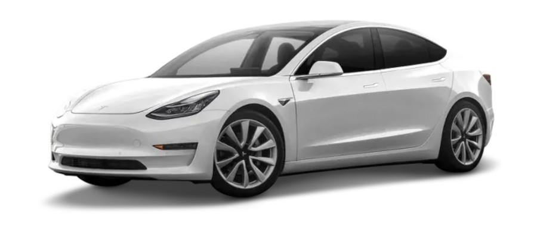
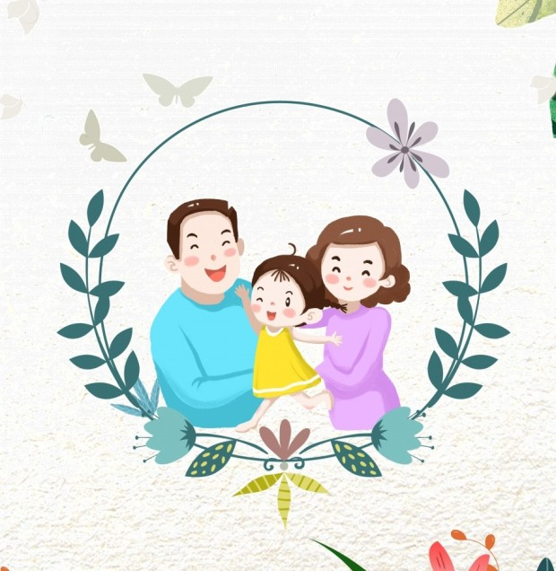
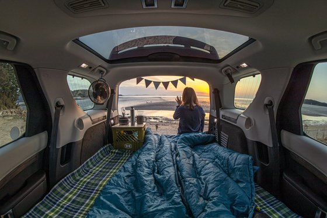

'안녕하세요, 유성입니다.'
저의 본명은 '김민식' 입니다.
'안녕하세요, 유성입니다.'
저의 본명은 '김민식' 입니다.
 저는 2003년 9월 8일 대전광역시에서 태어났습니다.
2021년 7월 현재도 대전광역시에 거주 중입니다.
저는 2003년 9월 8일 대전광역시에서 태어났습니다.
2021년 7월 현재도 대전광역시에 거주 중입니다.
저는 2019년 8월(2019년 3모듈) 에 거캠에 들어왔습니다.
 저는 이탈리아 음식을 좋아합니다. ex)피자, 파스타 등등
저는 이탈리아 음식을 좋아합니다. ex)피자, 파스타 등등
 저는 자동차, 스마트폰, 컴퓨터 등 it와 관련된 기계공학 부분에 관심이 많습니다.
저는 자동차, 스마트폰, 컴퓨터 등 it와 관련된 기계공학 부분에 관심이 많습니다.


저는 취미생활을 할때 음악을 듣는 것을 좋아하며 요즘 전기자동차, 자율주행자동차에 관심이 있습니다.
 제가 이루고 싶은 꿈은 저의 관심사인 자동차 관련 분야에서 일을 하고 싶습니다.
제가 이루고 싶은 꿈은 저의 관심사인 자동차 관련 분야에서 일을 하고 싶습니다.

그리고 결혼을 하여 한 집의 가장이 되어 행복한 가정을 만들고 싶습니다.
 저는 앞으로의 계획을 좀 많이 세워 놓았습니다.
저는 앞으로의 계획을 좀 많이 세워 놓았습니다.
 우선 올해 저의 생일이 지나면 운전면허를 취득할 예정입니다.
우선 올해 저의 생일이 지나면 운전면허를 취득할 예정입니다.

요즘 차에서 잠을 해결하는 '차박' 이라는 것이 유행하는데 저 혼자서 차박을 즐겨보고 싶습니다.
차박을 하려면 기본적으로 운전면허가 있어야 하는데 19살 생일이 지나면 누구나 운전면허를 취득할 수 있어서
면허를 취득하고 차를 운전해서 저만의 차박여행을 떠나보고 싶습니다.
그리고 거캠을 졸업한 후에는 국방의 의무를 지키기 위해 군대에 입대할 예정입니다.
 저는 육해공 중에서 해군에 지원하여 해군에서 복무하고 싶습니다.
저는 육해공 중에서 해군에 지원하여 해군에서 복무하고 싶습니다.
 만약 해군에 입대하게 된다면 4주간의 기초군사훈련을 받은 뒤 해군 운전병으로 근무하고 싶습니다.
만약 해군에 입대하게 된다면 4주간의 기초군사훈련을 받은 뒤 해군 운전병으로 근무하고 싶습니다.
현재 계획은 여기까지만 세워둔 상태이며 앞으로도 더욱 더 많은 계획을 세워나갈 예정입니다.
앞으로도 저의 무한한 성장을 위해 여러분들의 많은 관심 부탁드립니다!!
유성이의 거캠 개인주제들
2019-m3:알아두면 쓸데있는 신기한 고속버스
2019-m4:그들은 왜 이어폰 단자를 없앴는가
2020-m1:내가 좋아하는 자동차들에 대하여 탐구하기
2020-m2:자동차 살때, 이것만은 꼭! 넣으세요
2020-m3:하이브리드 자동차, 넌 도대체 누구니?
2020-m4:차선이탈 경보 시스템의 모든 것
2021-m1, m2:문제정의 심화 프로젝트 진행으로 인한 개인주제 프로젝트 미진행
유성이의 거캠 주제중심들
2019-m3:한일 무역전쟁의 진실은 무엇인가?
2020-m1:인류와 바이러스의 불안한 공존-바이러스의 재앙, 우리가 대처하는 방법
2020-m2:일하는 모든 사람들은 정당한 대우를 받고 있는가?
2020-m3:기후변화가 일으키는 이상현상과 우리에게 주는 영향